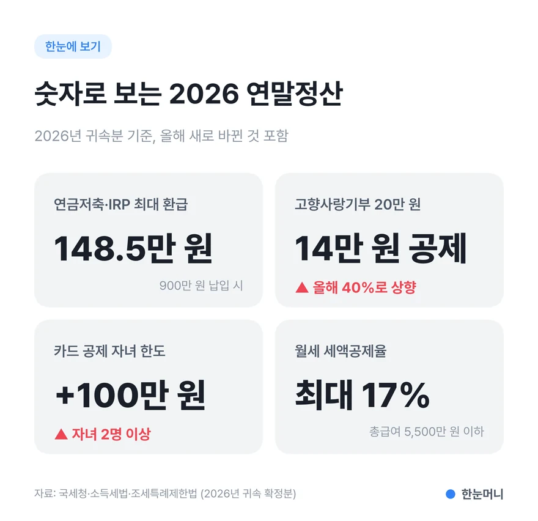
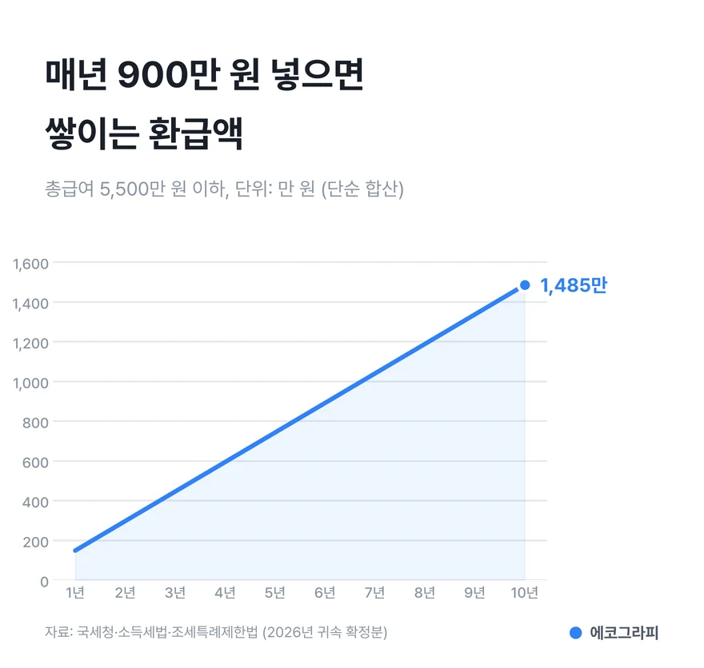
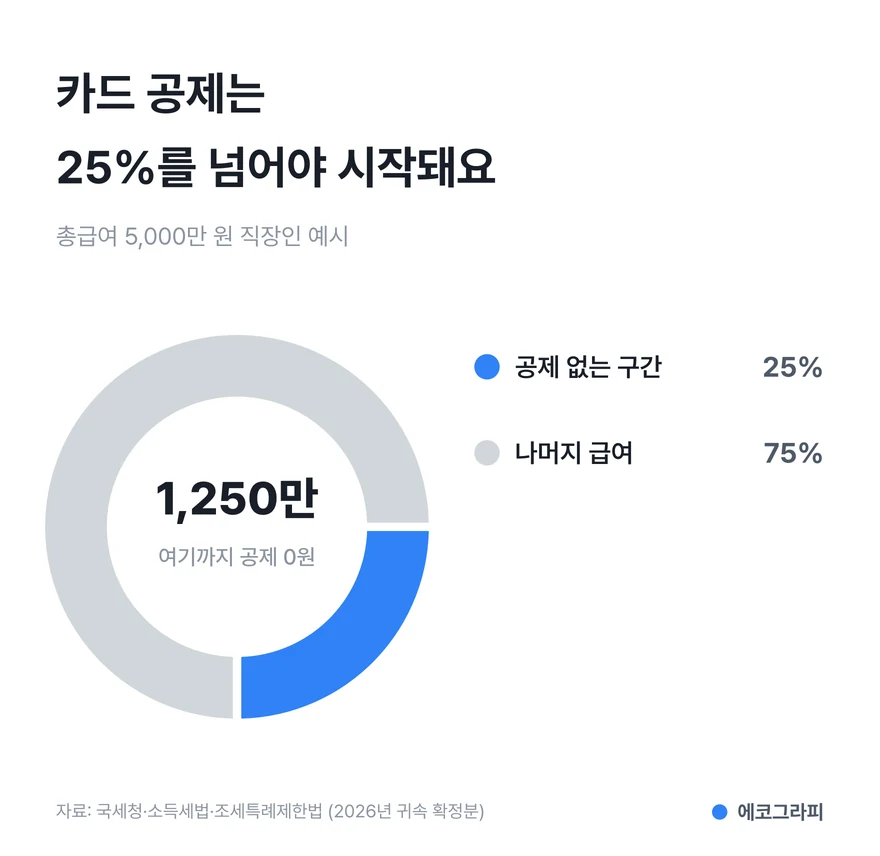
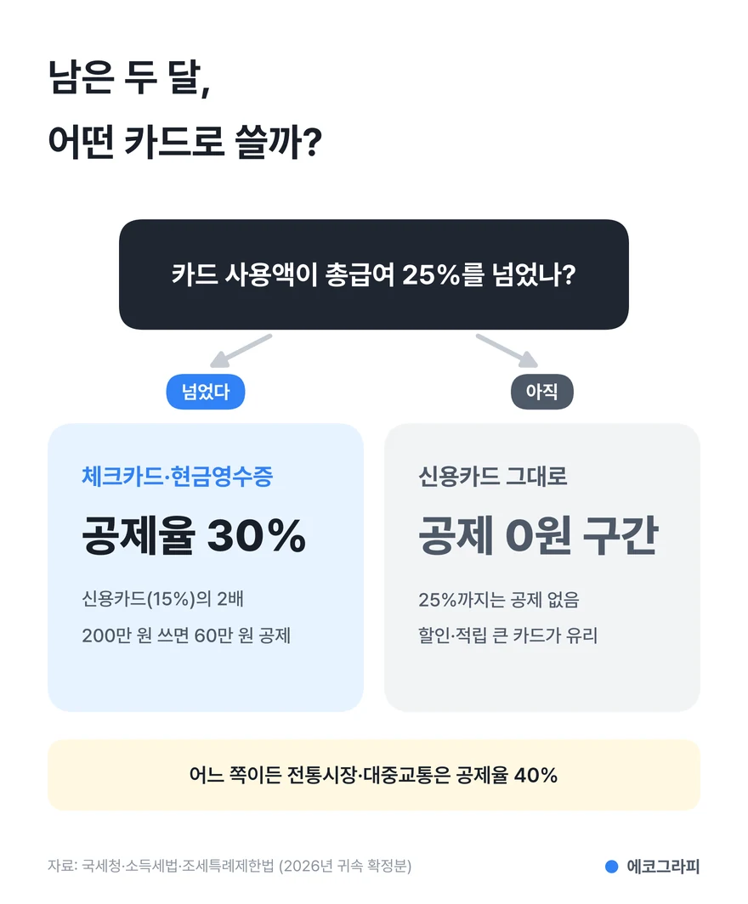
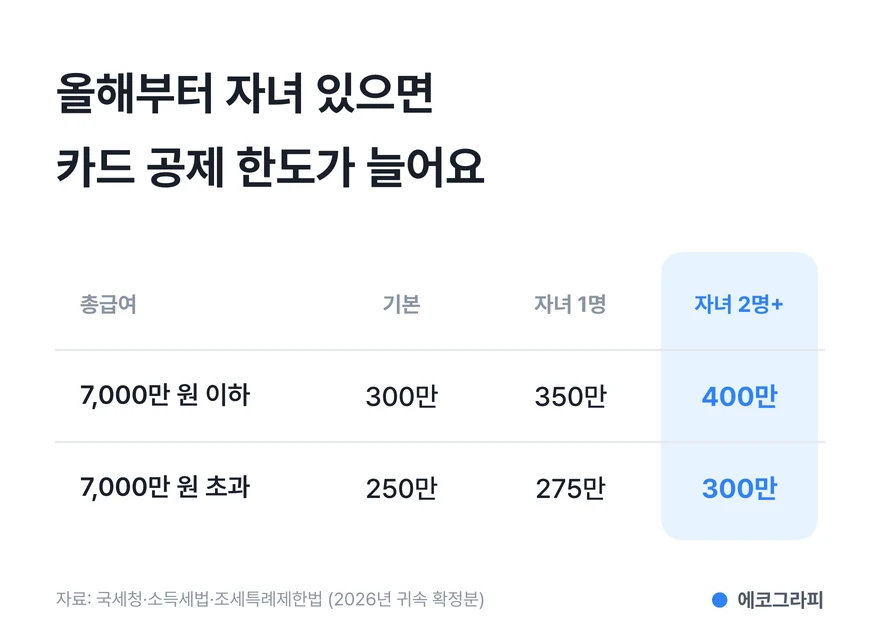
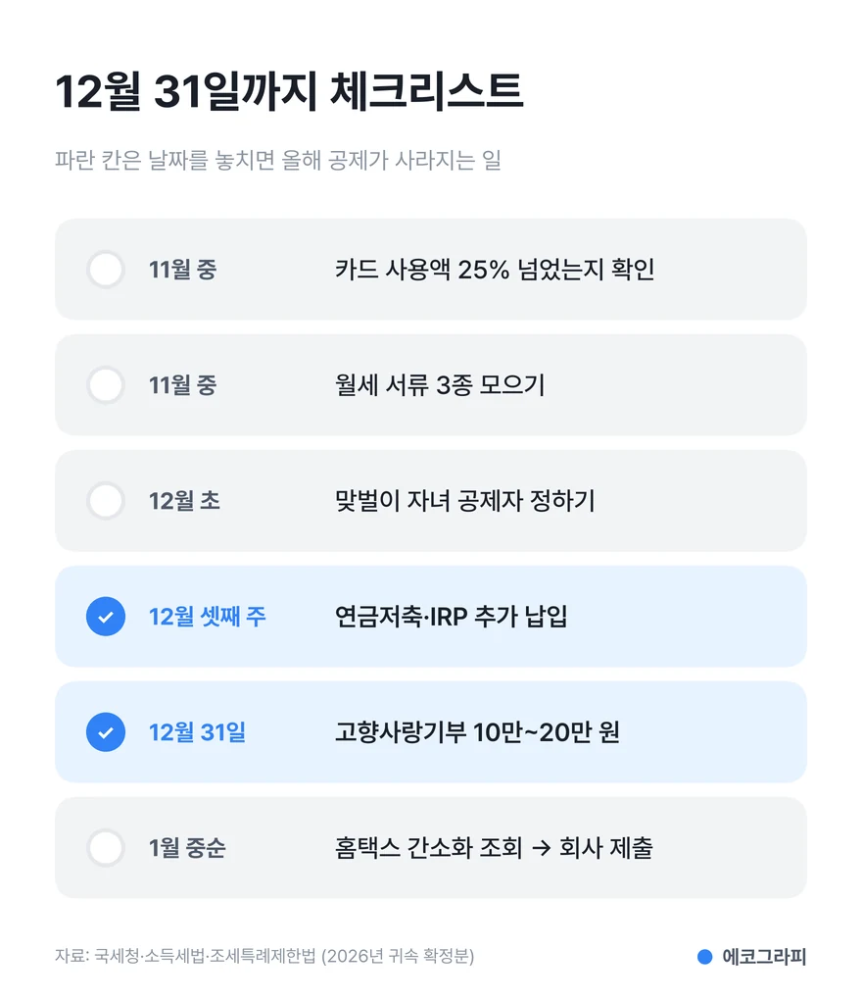

남은 기간 동안 환급액을 가장 크게 바꾸는 항목입니다. 연금저축과 IRP에 넣은 돈은 납입액 자체에 세액공제가 붙어서, 넣는 만큼 환급이 바로 늘어나요.

지금 할 일: 증권사·은행 앱에서 올해 납입액을 확인하고, 900만 원까지 남은 금액을 12월 셋째 주까지 넣으세요. 마지막 날은 이체가 몰립니다.
55세 전에 해지하면 공제받은 금액에 기타소득세(16.5%)가 붙어요. 비상금까지 끌어다 채우지는 마세요.

카드 소득공제는 총급여의 25%를 넘게 쓴 금액부터 계산돼요. 25%까지는 어떤 카드로 쓰든 공제가 0원입니다.

| 결제 수단 | 공제율 |
|---|---|
| 신용카드 | 15% |
| 체크카드·현금영수증 | 30% |
| 전통시장·대중교통 | 40% |

총급여 5,000만 원이고 이미 25%(1,250만 원)를 넘겼다면, 남은 200만 원을 체크카드로 쓸 때 공제가 30만 원에서 60만 원으로 늘어요. 세율 15% 구간이면 세금 차이는 약 4만 9,500원입니다.

자녀 요건: 20세 이하, 소득금액 100만 원 이하, 다른 사람의 기본공제를 받지 않은 자녀. 2026년 사용분부터 적용.
10만 원까지는 원래 전액 세액공제였고, 올해 기부분부터 10만 원 초과~20만 원 구간이 40%로 올랐어요.
| 기부액 | 세액공제 | 실제 부담 |
|---|---|---|
| 10만 원 | 10만 원 | 0원 + 답례품 |
| 20만 원 | 14만 원 | 6만 원 + 답례품 |
답례품은 기부액의 30% 이내. 20만 원이면 6만 원 상당까지 받을 수 있어 사실상 부담이 거의 없어요. 주민등록상 사는 지역에는 기부할 수 없습니다.
월세 60만 원(연 720만 원), 총급여 5,000만 원이면 약 122만 4천 원이 공제돼요. 올해부터는 주소가 다른 주말부부도 요건을 갖추면 각자 공제받을 수 있습니다(부부 합산 1,000만 원 한도).
| 항목 | 2026년 귀속 변경 |
|---|---|
| 예체능 학원비 | 9세 미만·초2 이하 자녀 미술·음악·체육 학원비 교육비 공제(15%) |
| 자녀세액공제 | 대상 9세 이상으로 조정, 첫째 25만·둘째 30만·셋째부터 40만 원 |
| 카드 공제 한도 | 자녀 수에 따라 최대 100만 원 추가 |
맞벌이라면 자녀 기본공제를 누가 받을지 먼저 정하세요. 카드 자녀 한도와 자녀세액공제가 모두 그쪽에 붙어요.

올해 계좌에 실제 입금된 금액만 인정돼요. 금융사마다 연말 마감 시간이 다를 수 있어 며칠 여유를 두는 게 안전합니다.
공제율은 같아요. 연금저축은 600만 원까지라 900만 원을 다 채우려면 최소 300만 원은 IRP에 넣어야 합니다.
카드 소득공제는 0원이에요. 공제보다 할인·적립 혜택이 큰 카드로 쓰는 게 유리합니다.
5월 종합소득세 신고 때 추가하거나, 5년 안에 홈택스 경정청구로 돌려받을 수 있어요.
정부가 9월에 발표한 개정안은 국회 통과 전이라 이 글에 넣지 않았어요. 확정되면 따로 정리할게요.
※ 2026년 11월 기준, 2026년 귀속 연말정산에 확정된 내용입니다. 개인 상황에 따라 공제액은 달라질 수 있으니 홈택스와 회사 담당자에게 최종 확인하세요. 특정 금융상품 가입 권유가 아닙니다.